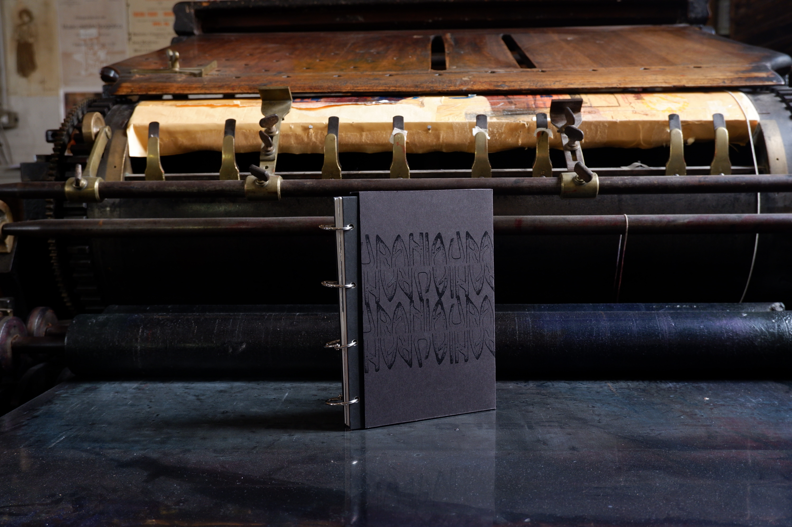
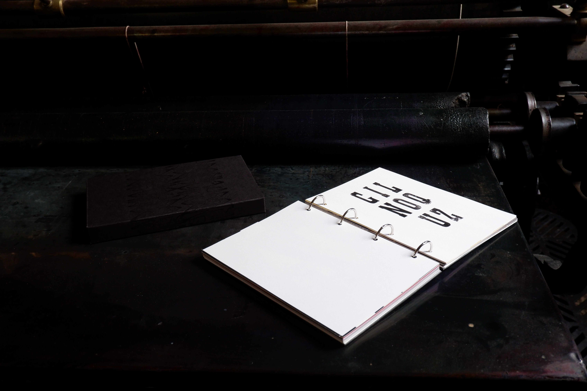

Urania è un racconto esperienziale dedicato alla stampa a caratteri mobili. Attraverso la scoperta dell’Antica Tipografia Portoghese, attiva dal 1891, il lettore entra in contatto con una tradizione ancora viva nel più antico laboratorio tipografico della Puglia.

Mi presento, sono Urania una vecchia piano cilindrica dell’Antica Tipografia Portoghese.
Tre capitoli che ripercorrono la stampa tipografica, nei gesti, nei processi e nei valori.


CAPITOLO 1
Il peso delle parole
Nel primo capitolo si riflette sul rapporto tra significato e significante: otto parole descrivono una diversa intensità sonora, partendo dall’estremo del silenzio e arrivando all’estremo opposto del rumore. Nella parte interattiva, l’utente si allena a riconoscere il peso visivo delle lettere, attraverso l’abbinamento delle parole ai fusti dei caratteri.

CAPITOLO 2
Il carattere del tempo
L’utente si ritrova davanti alla difficoltà di dover scegliere cosa stampare: i caratteri, fuori dal cassetto, trovano il loro posto e - insieme - il loro senso. È nella sezione interattiva che si sperimenta l’intero processo di stampa, attraverso la lentezza che la fase di composizione e chiusura della forma richiedono.


CAPITOLO 3
La presenza dell'imperfezione
L’utente esplora i segni che il tempo ha impresso sui caratteri in legno, riscoprendo l’unicità dell’imperfezione. Nella seconda parte, a partire da una lettera imperfetta e “manchevole”, dovrà dare spazio all’immaginazione, creando una nuova storia da quel tassello insolito.


“La bellezza della tipografia è la pressione.”
GENNARO, tipografo dal 1961
Le grafiche che accompagnano il libro prendono forma da composizioni e tirature tipografiche realizzate appositamente per il progetto dall’Antica Tipografia Portoghese. Un ringraziamento speciale va a Francesca Portoghese e a Gennaro Zaccaria.